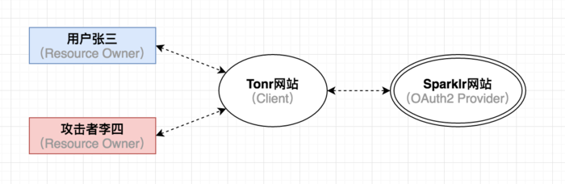
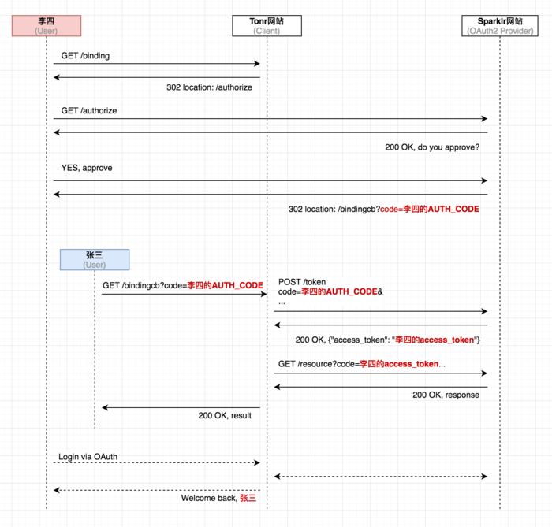

前记
本文主要是理解 OAuth2 协议中的 state 参数的用意——防止第三方客户端被 CSRF 攻击。
Demo 依然是 OAuth2 初识中的 模拟 QQ 授权银行客户端（授权码模式）。
参考文章：
RFC 6749 – Cross-Site Request Forgery
OAuth2 CSRF攻击
针对 OAuth2 的 CSRF 攻击流程
假设有用户张三，攻击者李四，OAuth2 服务提供者 Sparklr，以及第三方客户端 Tonr（它允许使用第三方社交账号 Sparklr 登录，并允许用户将 Sparklr 账号和 Tonr 账号进行绑定）。

- 攻击者李四 进入 Tonr 网站，使用第三方社交 Sparklr 账号登录。
- Tonr 将李四重定向到 Sparklr，由于他本地已经登录过 Sparklr（类似挂着QQ），所以 Sparklr 直接向他显示是否授权 Tonr 访问的页面。
- 李四在点击”同意授权”之后，使用类似 BurpSuite 这样的流量拦截工具，截获了 Sparklr 服务器返回的含有 Authorization code 参数的 HTTP 响应。（因为该 code 只能使用一次，所以要避免被浏览器正常使用了）
- 李四精心构造一个 Web 页面，它会触发 Tonr 向 Sparklr 发起令牌申请的请求，而这个请求中的 Authorization Code 参数正是上一步截获到的 code。
- 李四将这个 Web 页面放到互联网上，等待或者诱骗受害者张三来访问。
- 张三此时正在 Tonr 上看东西（即登录状态），只是没有把自己的账号和其他社交账号绑定起来。在张三访问了李四准备的这个 Web 页面，令牌申请流程在张三的浏览器里被顺利触发，Tonr 从 Sparklr 那里获取到 access_token，但是这个 token 以及通过它进一步获取到的用户信息却都是攻击者李四的。
- Tonr 将李四的 Sparklr 账号同张三的 Tonr 账号关联绑定起来。从此以后，李四就可以用自己的 Sparklr 账号通过第三方登录到张三在 Tonr 网站中的账号，堂而皇之的冒充张三的身份执行各种操作。
让我们从几个不同的角度来看看这当中发生了什么。
受害者张三（Resource Owner）视角
受害者张三访问了一个 Web 页面，然后，就没有然后了。
他在 Tonr 网站上的账号就和攻击者李四在 Sparklr 上的账号绑定到了一起。
伪造的请求是经过精心构造的，令牌申请这一过程在张三的浏览器里是非常隐蔽的被触发的，他根本不知道这背后发生了什么。
Tonr 网站（Client）视角
从 Tonr 网站来看，它收到的所有请求看上去都是正常的。
首先它收到了一个 HTTP 请求，其代表着当前用户张三在 Sparklr 网站上已经做了”同意授权”操作。其内容：GET /bindingCallback?code=AUTHORIZATION_CODE
注意：此时 URL里的 code 不是当前受害者张三的 Authorization Code，而是攻击者李四的。
当 Tonr 收到这样的请求时，它以为张三已经同意授权（但实际上这个请求是李四伪造的），于是就发起后续的令牌申请请求，用收到的 Authorization Code 向 Sparklr 换取 access_token，只不过最后拿到的是攻击者李四的 access_token。
最后，Tonr 网站把攻击者李四的 access_token 和当前受害者张三在 Tonr 网站上的账号进行关联绑定。
Sparklr 网站（OAuth2 服务提供者）视角
认证方 Sparklr 网站也是一脸茫然的样子，因为在它看来，自己收到的授权请求，以及后续的令牌申请请求都是正常的，或者说它无法得知接收到的这些请求之间的关联关系，而且也无法区别出这些请求到底是来自张三本人，还是由李四伪造出来的。
因此只要自己收到的参数是正确有效的，那就提供正常的认证服务，仅此而已。
攻击者李四视角
李四伪造了一个用户授权成功的请求，并且将其中的 Authorization Code 参数替换成了自己提前获取到的 code。
这样，当受害者的浏览器被欺骗从而发起令牌申请请求时，实际上是在用张三在 Tonr 网站上的账号和李四在 Sparklr 网站上的账号做绑定。
攻击完成后，李四在 Tonr 网站上可以通过自己在 Sparklr 网站的账号进行登录，而且登录进入的是张三在 Tonr 网站上的账号。
而张三通过自己在 Tonr 网站上的账号登录进去之后，看到的是李四在 Sparklr 网站上的数据。
上帝视角
从整体上来看，这次攻击的时序图应该是下面这个样子的：

前提条件
尽管这个攻击既巧妙又隐蔽，但是要成功进行这样的 CSRF 攻击需要满足一定前提：
在攻击过程中，受害者张三在 Tonr 网站上的用户会话（Session）必须是有效的，也就是说，张三在受到攻击前已经登录了 Tonr 网站。
整个攻击必须在短时间内完成，因为 OAuth2 提供者颁发的 Authorization Code 有效期很短，OAuth2 官方推荐的时间是不大于10分钟，而一旦 Authorization Code 过期那么后续的攻击也就不能进行下去了。
一个 Authorization Code 只能被使用一次，如果 OAuth2 提供者收到重复的 Authorization Code，它会拒绝当前的令牌申请请求。不止如此，根据 OAuth2 官方推荐，这个已经使用过的 Authorization Code 相关联的 access_token 全部都要撤销掉，进一步降低安全风险。
state 参数防御
要防止这样的攻击就要用到 state 参数，具体细节：
在将用户重定向到 OAuth2 的 Authorization Endpoint 去的时候，为用户生成一个 state 参数并加入到请求 URL 中。
在收到 OAuth2 服务提供者返回的包含 Authorization Code 重定向请求的时候，验证接收到的 state 参数值。如果是正确合法的请求，那么此时接受到的参数值应该和上一步提到的为该用户生成的 state 参数值完全一致，否则就是异常请求。
state 参数值必须满足下面几个特性：
- 不可预测性：足够的随机，使得攻击者难以猜到正确的参数值。
- 关联性：state 参数值保存在 Session、或 Cookie、或 Local storage（同源策略保护）。
- 唯一性：每个用户，甚至每次请求生成的 state 参数值都是唯一的。
- 时效性：state 参数一旦被使用则立即失效。
以上面的角色和 Demo 代码举例：
前提：Tonr 的开发者在了解到这个 state 参数后即进行了修复。
用户张三访问攻击者李四的 Web 恶意页面，里面包含了请求 bank 中的 bindingCallback的代码和李四自己的授权码 code=AUTHORIZATION_CODE。
然后 Tonr 收到请求后会先检查浏览器中保存的 state 是否存在，如果不存在或者 state 的值不匹配，即可以判断这可能是恶意请求，从而避免了攻击者的恶意绑定行为。
总结
state 参数在 OAuth2 认证过程中不是必选参数，但如果忽略就会导致应用易受 CSRF 攻击。此外，这样的攻击非常巧妙，可以悄无声息的攻陷受害者的账号，难以被察觉到。